AI-Empowered Cooperative One-Surgeon-Four-Arm Robotic System for Solo-Hysterectomy
Abstract
The increasing robotic and intelligent techniques are enhancing surgeon's operational capabilities for finer surgical intervention, yet AI-enabled surgical robots for solo laparoscopic procedures remain nascent and clinically unvalidated. Here, we present an AI-empowered one-surgeon-four-arm robotic system that enables one surgeon to perform a complete hysterectomy (79mins) independently for the first time. The system integrates two intelligent robots that autonomously interpret surgical scenes to optimize control strategies and adapt intraoperative views on-the-fly. We further introduce multiple levels of cooperative control (LoCC) paradigm that is clinically feasible for surgical autonomy with explicit surgeon-AI-robots role definitions, facilitating automation of a solo hysterectomy in operating theaters. Phantom and cadaver experiments demonstrate our system's superior performance in visual parsing, surgical scene understanding, and cooperative control, which enables efficient and highly autonomous coordination (>55mins full-automation) of four-arm surgical tasks, demonstrating our LoCC framework's scalability for long-horizon task automation in various laparoscopic treatments through a human-robot cooperative paradigm.
System Overview
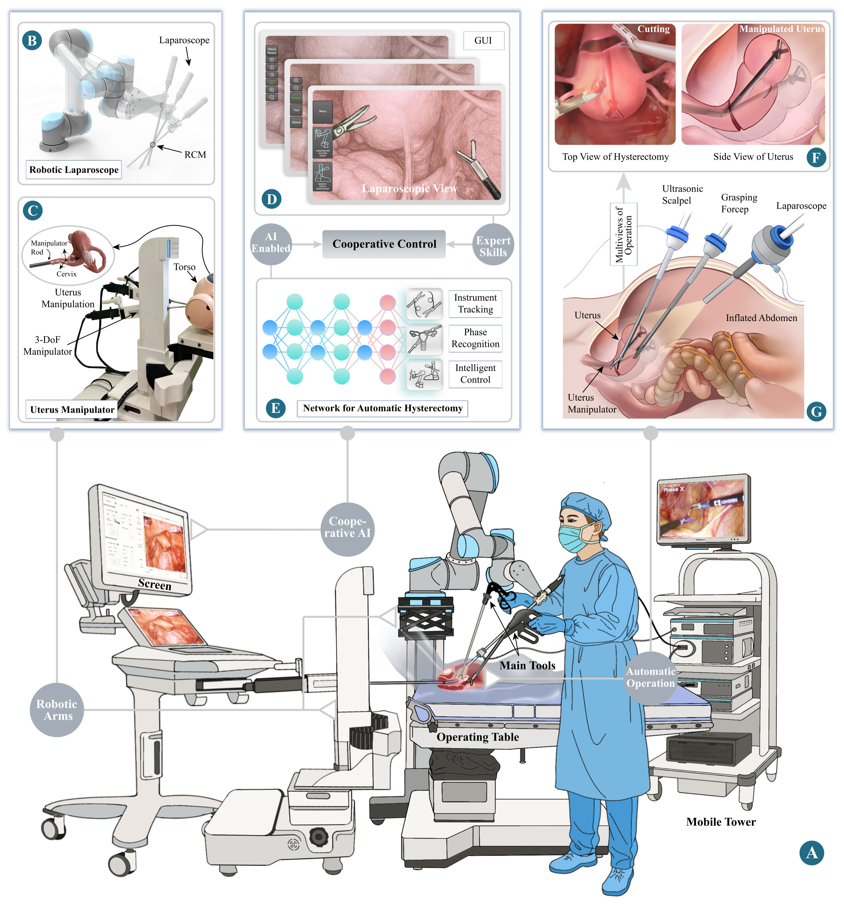
Fig. 1. Overview of the AI-empowered cooperative one-surgeon-four-arm (OSFA) robotic system.
Supplementary Videos
Visual Perception
Movie S1 · Surgical Instrument Detection & Tracking
Robust real-time tracking of multiple instruments in real-world surgical videos, addressing complex scenarios such as smoke, blur, occlusion, blood, and small objects.
Movie S2 · Surgical Phase Recognition
Different laparoscope control strategies, including optimal view selection and control speed, tailored to the current surgical phase.
Phantom Experiments
Movie S3 · LoCC-0: Fully Manual
Experiments conducted by one surgeon and two assistants, with manual operation of the laparoscope and the uterine manipulation rod.
Movie S4 · LoCC-1: Robot-Assisted
The laparoscope-holding robot arm and robotic uterine manipulator replace the assistant; assistants tele-operate the two robots.
Movie S5 · LoCC-2: Surgeon-Commanded
Two robots are directly controlled by the primary surgeon through external input commands.
Movie S6 · LoCC-3: AI-Autonomous
Robot movements are determined by AI-based surgical scene perception algorithms, enabling autonomous control without an assistant or extra equipment.
Movie S7 · LoCC-4: GUI-Directed
The primary surgeon uses a developed GUI to directly control the robots to manipulate the laparoscope and uterus to the desired position.
Cadaver Experiments
Movie S8 · Intelligent Control for Robotic Laparoscope & Uterus Manipulator
Individual validation of each control mode under clinical settings.
Movie S9 · Solo-Hysterectomy Under Different Surgical Phases
Integrated evaluation of the OSFA system in a cadaver experiment, where a senior surgeon used the system throughout different surgical phases.
Extended Demonstrations
1 · Instrument Tracking & Depth Estimation
Tool Tracking Dataset
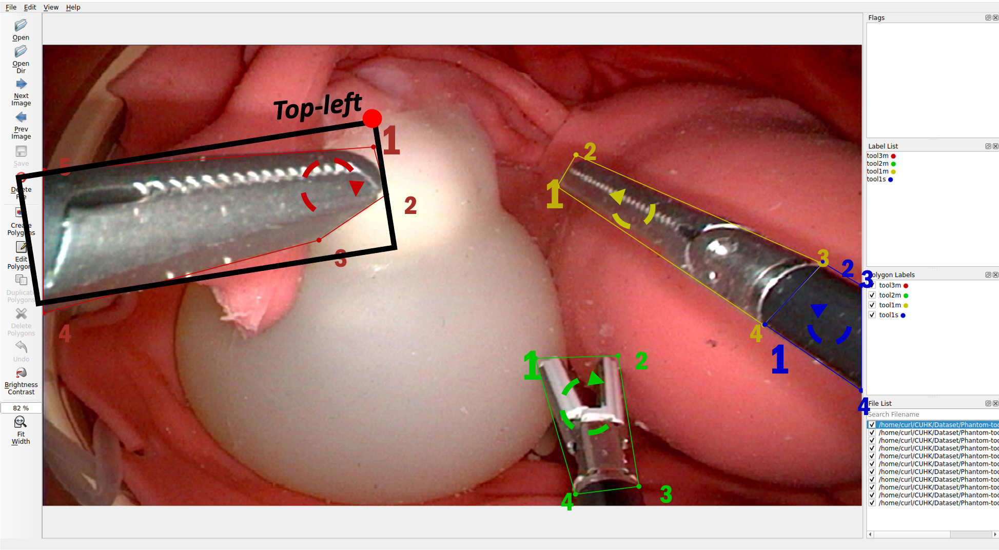
Fig. A. Labeled tool tracking dataset with instance annotations.
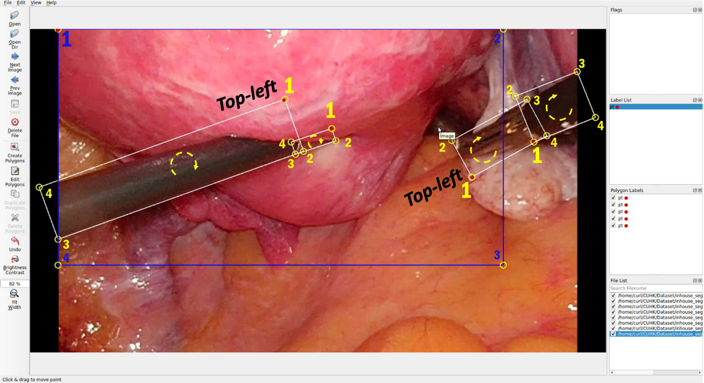
Fig. B. Dataset converted to top-left coordinate representation.
Real-time tracking of surgical instruments at 60 fps with simultaneous depth estimation, enabling robust 3-D awareness in live surgical scenes.
Smooth Real-Time Tracking
Multi-instrument detection and tracking at 60 fps under challenging surgical conditions.
Real-Time Depth Estimation (60 fps)
Dense depth maps inferred in real time, providing the robot with accurate instrument–tissue distance cues.
Solving Tracking Ambiguity
Two clinical scenarios demonstrating how our method resolves identity ambiguity during instrument occlusion and re-appearance, compared against a baseline without ambiguity resolution.
Case 1 — With Ambiguity Resolution
Identity maintained correctly after occlusion.
Case 1 — Without Ambiguity Resolution
Identity switch occurs after re-appearance.
Case 2 — With Ambiguity Resolution
Robust tracking despite cross-over of instrument paths.
Case 2 — Without Ambiguity Resolution
Tracking failure under instrument path crossing.
Phantom & In-Vivo Validation Cases
Each case demonstrates the top-left corner tracking mechanism. For every video, we show the initial top-left corner label (before processing) alongside our tracked top-left corner result, highlighting the improvement in localization accuracy.
Phantom Cases
Phantom Case 1
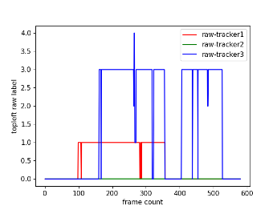
Initial label
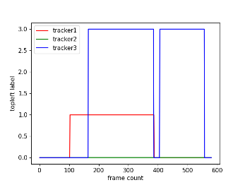
Tracked result
Phantom Case 2
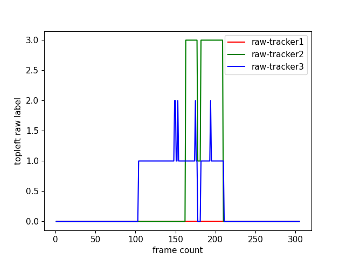
Initial label
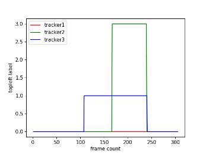
Tracked result
Phantom Case 3
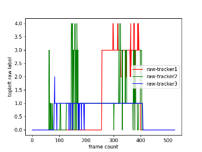
Initial label
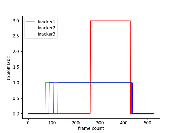
Tracked result
In-Vivo Cases
In-Vivo Case 1
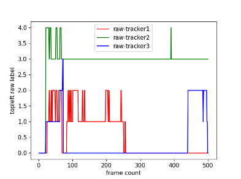
Initial label
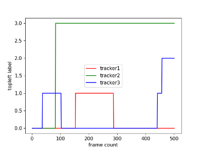
Tracked result
In-Vivo Case 2
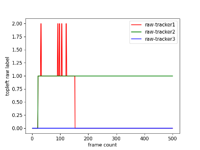
Initial label
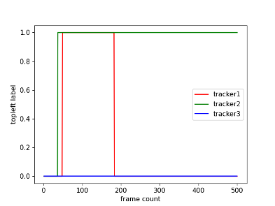
Tracked result
In-Vivo Case 3
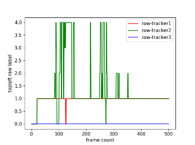
Initial label
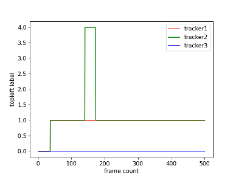
Tracked result
2 · GUI Interface
The surgeon-facing GUI integrates real-time surgical scene understanding, instrument tracking overlays, laparoscope control feedback, and LoCC mode selection in a single unified interface.
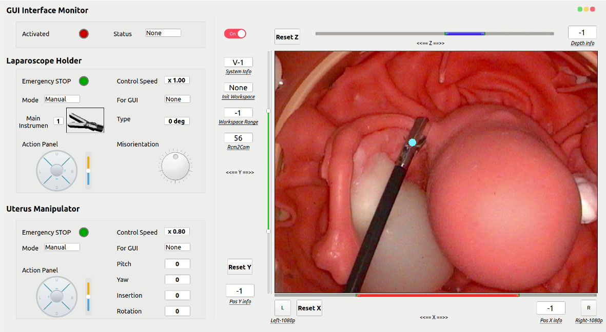
Fig. E. Surgical GUI displaying real-time instrument tracking, phase recognition, depth estimation, and cooperative control status.
3 · Automated Laparoscope Control
The system autonomously adjusts laparoscope position and field-of-view scale in real time based on surgical scene understanding — eliminating the need for an assistant to hold or reposition the camera during the procedure.
Automated Laparoscope Control with Dynamic Scale
AI-driven laparoscope repositioning and zoom adaptation in response to changing surgical phase and instrument positions, demonstrated in a representative case.
4 · Voice-Commanded Robot Motion
The primary surgeon can issue verbal commands to adjust robot positions, freeing both hands for the operative instruments and reducing cognitive load during critical moments.
Voice-to-Robot Control Demo
Surgeon issues spoken commands that are interpreted and executed by the robotic laparoscope and uterine manipulator in real time.
5 · User Study
A structured user study was conducted to evaluate surgeon experience and performance with the OSFA system's laparoscope and uterine manipulator control interfaces across different LoCC modes.
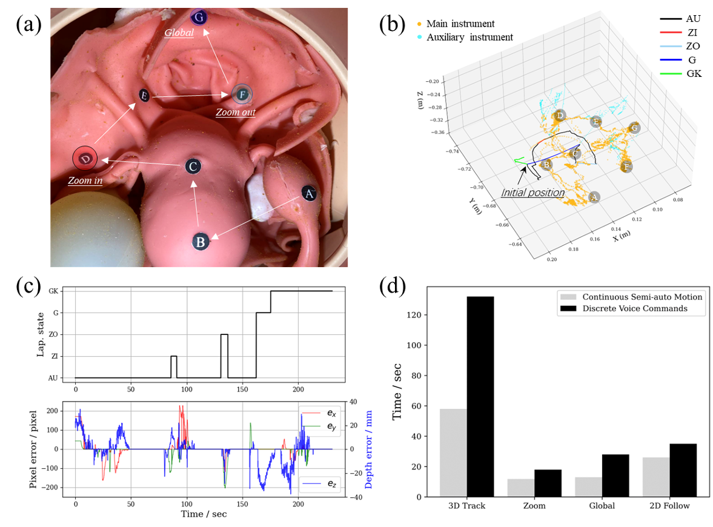
Fig. F. User study results for robotic laparoscope control.
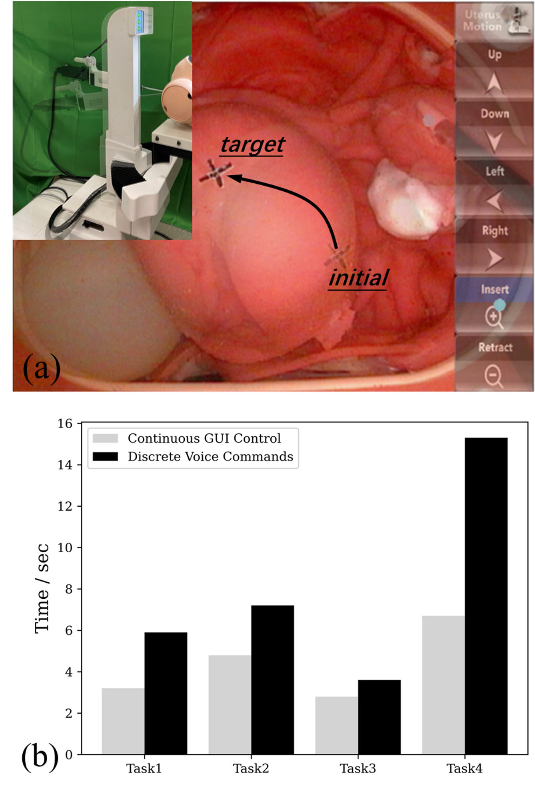
Fig. G. User study results for robotic uterine manipulator control.
6 · Cadaver Integration
Full system integration validated in a clinical cadaver setting, demonstrating the seamless cooperation of all four robotic arms under real operating theater conditions.
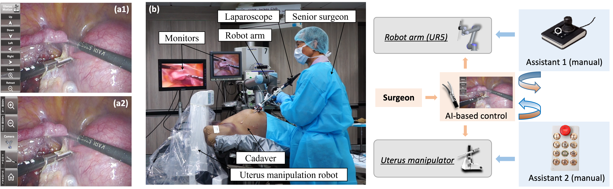
Fig. H. Integrated OSFA system deployed in cadaver experiment, validating full four-arm cooperative hysterectomy under clinical conditions.
Control Mode Distribution
Breakdown of time spent in each control mode during the full cadaver hysterectomy, separately for the robotic laparoscope and the uterine manipulator, demonstrating the high degree of automation achieved by the OSFA system.
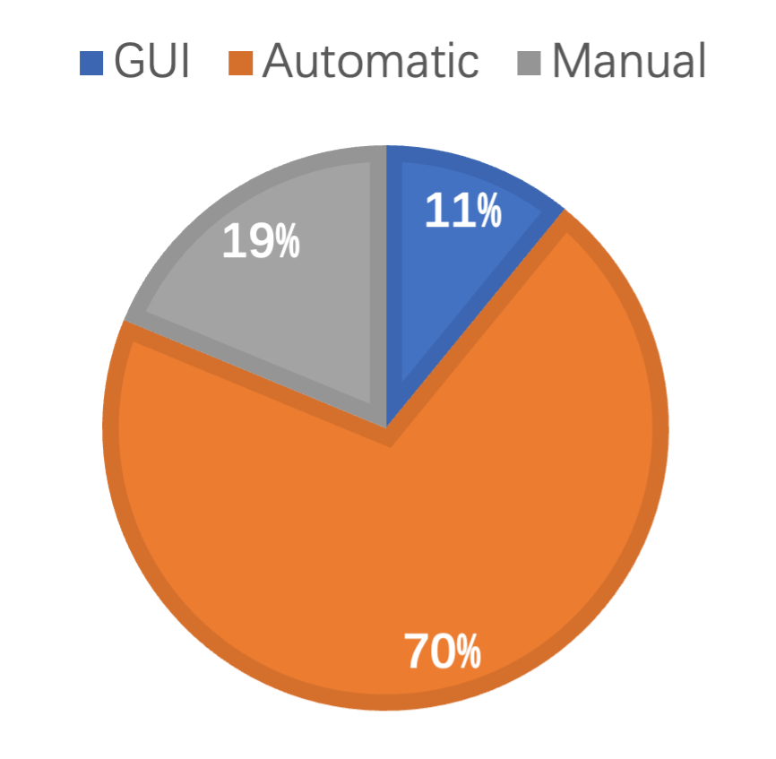
Fig. I. Distribution of control modes for the robotic laparoscope during solo hysterectomy (cadaver experiment).
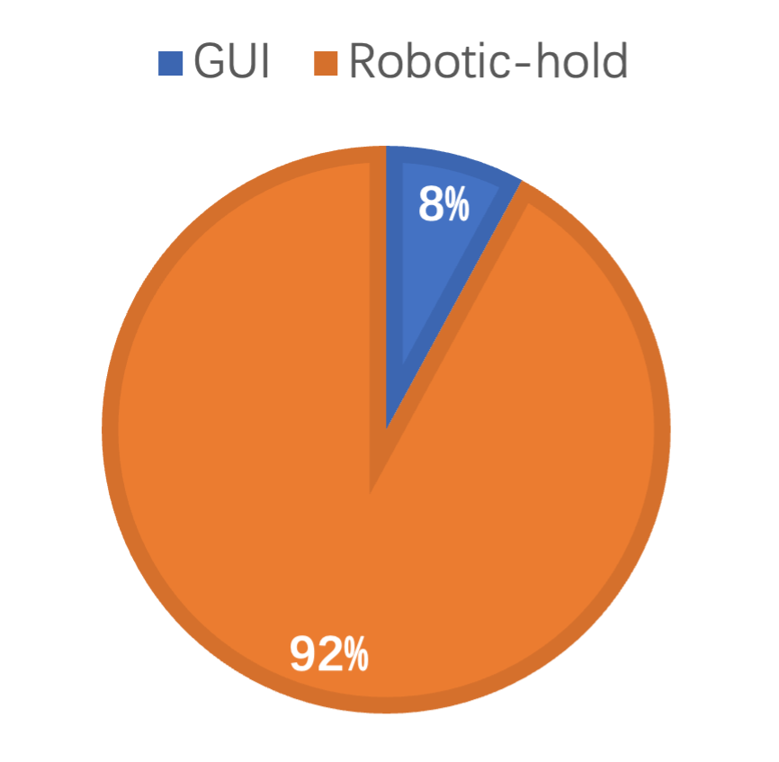
Fig. J. Distribution of control modes for the robotic uterine manipulator during solo hysterectomy (cadaver experiment).
BibTeX
@article{Li2026OSFA,
title={AI-Empowered Cooperative One-Surgeon-Four-Arm Robotic System for Solo-Hysterectomy},
author={Li, Bin and Wang, Ziyi and Lu, Bo and Wu, Jiahao and Lu, Yiang and Zhong, Fangxun and Cheung, Tak Hong and Dou, Qi and Liu, Yunhui},
year={2026},
}